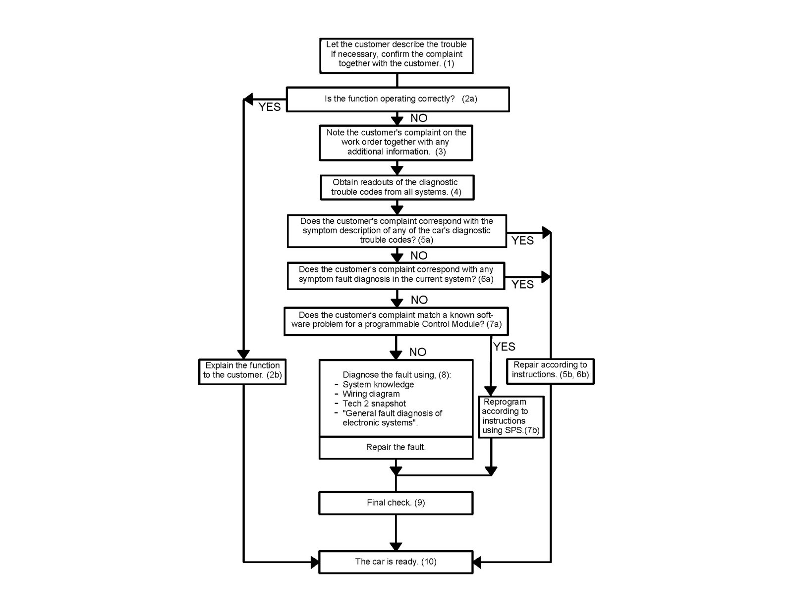

Fault Diagnosis Strategy For Electronic Systems
Fault diagnosis strategy for electronic systems
1. The customer's description of the trouble is the basis of the fault diagnosis strategy.
If necessary, the customer must demonstrate the trouble on the car to avoid a misunderstanding.
2. In certain cases, the function may be operating correctly.
2.a. Good product knowledge is required to be able to determine if this is the case.
2.b. If the function is operating correctly, this must be explained to the customer.
3. If the function is judged to be faulty, the car must be repaired.
Saab's fault diagnosis strategy is based on the technician being familiar with the customer's description of the trouble. Therefore, note the complaint and any additional information on the work order.
4. The technician obtains readouts of the diagnostic trouble codes from all systems.
A malfunction in one system may well be caused by a fault in another system.
5. There may be diagnostic trouble codes in the car that are secondary faults or that are incorrectly set.
5.a. Compare the customer's complaint with the symptom descriptions of the different diagnostic trouble codes. EPSI has a quick search path for this.
5.b. If the symptom description of a diagnostic trouble code corresponds with the customer's complaint, this diagnostic trouble code is probably caused by the primary fault.
Repair according to the instructions.
6. If there is no corresponding diagnostic trouble code, the fault can be diagnosed from the symptom.
6.a. Search the EPSI under fault diagnosis by symptoms in the system where the fault has occurred.
6.b. If the symptom description in the system concerned corresponds with the complaint, it is probably the correct fault diagnosis description.
Repair according to the instructions.
7. Certain fault symptoms can be rectified by reprogramming the control module.
7.a. Does the customer complaint correspond with a known software problem in a reprogrammed control module?
7.b. Reprogram the control module as instructed in SPS.
8. If there is no corresponding diagnostic trouble code or symptom, the technician must diagnose the fault himself.
A final check must be made after repairs.
Good technical product knowledge is required to solve this kind of problem.
9. The car is ready.
General fault diagnosis in electronic systems
Control module
When the control module is supplied with current, its processor is activated. The processor then reads the instructions that are stored in the control module's memory.
The control module is programmed to read the inputs and activate the outputs. If the control module is faulty, the diagnostic trouble code "Internal control module fault" is set.
In order for the system to function, the control module must be supplied with current. When the control module is supplied with current and the processor activated, this will be noticed in that the diagnostic tool can then make contact with the control module.
Outputs
The system controls a number of functions with the help of various actuator units, e.g. an injector or a bulb. For the system to be capable of carrying out its functions, it must be possible to activate the actuator units. Therefore, they must be in contact with the control module and have the correct power supply or grounding.
Inputs
For the control module to be capable of controlling its actuator units, the system sensors must supply it with the correct values.
The function of the sensors can be checked with the diagnostic tool.